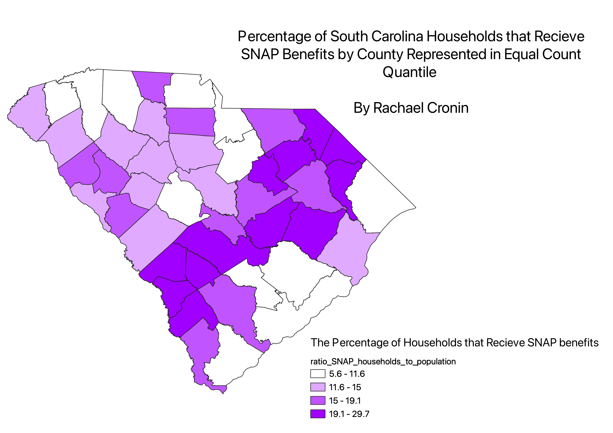
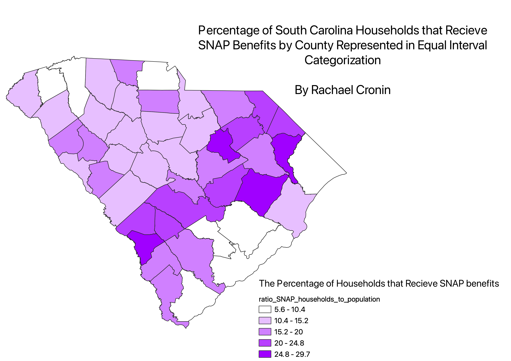
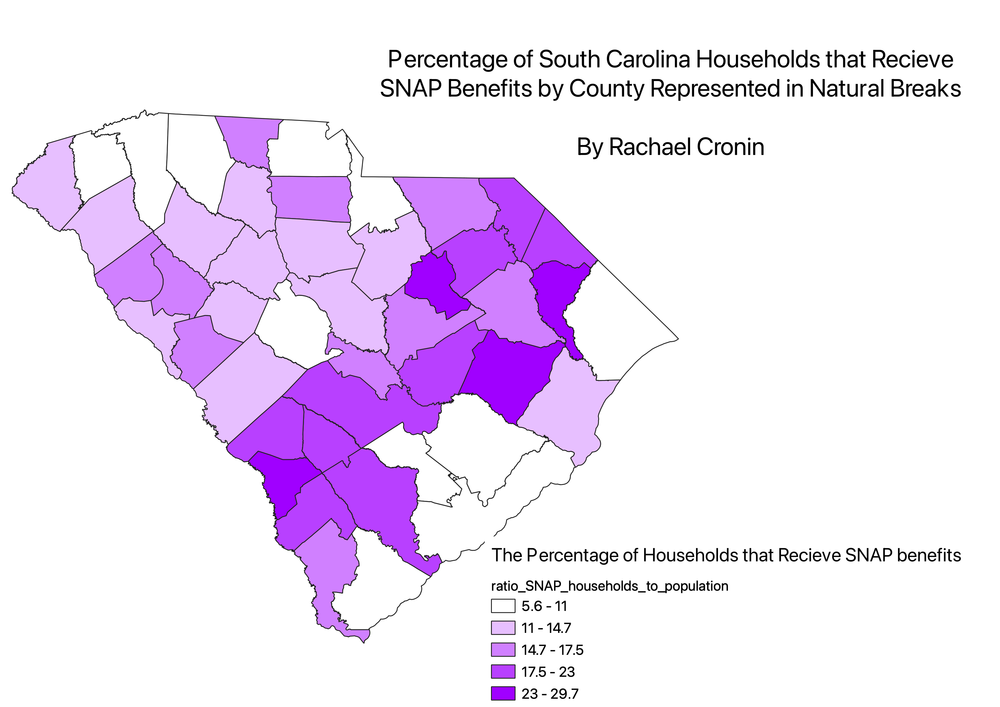

Homework 6: Normalized Census Data Choropleth
Rachael Cronin
I chose to create a ratio of the number of households recieving SNAP benefits in the last 12 months per county to the total number of households per county. I used this ratio to normalize the data, as some representations of this information can be misleading if one county has a significantly higher population, as it would most likely also have a significant higher number of households recieving SNAP benefits. However, creating this ratio demonstrates how much of a specific county's population is recieving SNAP benefits and therefore gives us a better idea of the level of food security in that county in relation to the rest of South Carolina's counties.
Equal Count Quantile Categorization
The Equal Count Quantile classification is similar to the equal interval classification, as it creates classes with equal numbers of observation in each. This is most useful for evenly distributed datasets. This method is really good at emphasizing relative positions of the values. Issues arise for this classificatino in that features in the same class can have wildly different values, or have very similar valeus but can end up in different classes, which can make it look like there is bigger difference than what is actually there.

Equal Interval Categorization
Equal interval classifications divide the attribute value ranges up into equally sized classes. They are great for representing continuous data sets and creates legends that are easy to interpret and present to everyone. A disadvantage is that some datasets will ends up with almost all of their values in two classes because the majority of their values are similar.

Natural Breaks Categorization
The natural breaks method divides the values into classes determined by distinct break points in the data. This is best for datasets that are unevenly distributed, but not necessarily skewed. Some drawbacks of this classification is that it can create classes with widely varying ranges and it is difficult to compare two natural breaks maps because the breaks are specific to the datasets.

Data for this Homework
SNAP CSV dataset
Link to SC counties shapefile